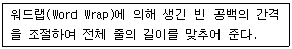
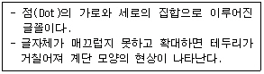
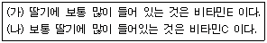
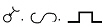
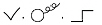
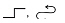
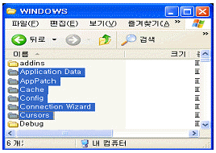
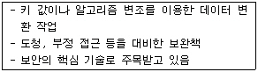
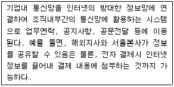

워드프로세서-2급(폐지) (2006-11-19 기출문제)
1과목: 워드프로세서 용어 및 기능
1. 다음 중 메일머지의 데이터 파일로 적당하지 않은 것은?
- 주소록
- 다른 문서 파일
- 문서내의 표
- 데이터베이스 파일
(정답률: 60%)

2. 다음 중 토글(Toggle) 키로만 짝지어진 것은?
- [F1], [Enter]
- [Esc], [Caps Lock]
- [Caps Lock], [Insert]
- [Page Down], [Shift]
(정답률: 93%)
3. 다음 중 입력장치에 대한 설명으로 옳지 않은 것은?
- 스캐너(Scanner) : 그림이나 사진 등의 영상 정보를 문서에 입력할 수 있도록 변환해 주는 장치이다.
- 마우스(Mouse) : 워드프로세서를 사용할 때 편리하게 아이콘이나 메뉴를 선택할 수 있는 장치이다.
- OMR(Optical Mark Reader) : 손으로 쓴 숫자나 문자를 인식하는 장치이다.
- 디지타이저(Digitizer) : 미리 정해진 화면의 범위 내에서 좌표를 검출하여 도형 정보를 입력하는 장치이다.
(정답률: 72%)
4. 다음 중 동일한 문서 내에서나 다른 문서 간에 관련된 내용을 유기적으로 연결하여 바로 참조할 수 있도록 만들어진 문서의 형식은?
- 메일머지(Mail Merge)
- 하이퍼텍스트(Hypertext)
- 상용구(Glossary)
- 매크로(Macro)
(정답률: 82%)
5. 다음 중 워드프로세서에서 [Enter] 키와 관련이 없는 것은?
- 커서의 이동
- 강제개행(Hardware Return)
- 새로운 문단의 시작
- 눈금자(Ruler)
(정답률: 87%)
6. 다음 내용은 워드프로세서의 어떤 기능에 대한 설명인가?

- 영문 균등(Justification)
- 보일러 플레이트(Boiler Plate)
- 래그드(Ragged)
- 맞춤법 검사(Spelling Check)
(정답률: 77%)
7. 다음 중에서 “Cut(오려두기) → Paste(붙이기)” 기능과 가장 관련이 많은 기억장치는?
- CD-ROM
- 하드디스크(Hard Disk)
- 버퍼(Buffer)
- 플로피디스크(Floppy Disk)
(정답률: 89%)
8. 공문서는 어떤 수단을 이용하여 발신하는 것을 기본 원칙으로 하는가?
- 인편
- 정보통신망
- 우편
- 모사전송
(정답률: 88%)
9. 다음 중 워드프로세서의 저장기능에 대한 설명으로 옳지 않은 것은?
- 현재 작업 중인 문서를 보조기억장치에 저장하는 기능이다.
- 텍스트 파일이나 웹 문서 파일로 저장할 수 있다.
- 현재 작업 중인 문서의 글자 크기, 모양, 서식, 도표 등을 편집 형태와 일치하게 텍스트 파일로 저장할 수 있다.
- 문서를 저장할 때 암호를 지정할 수 있다.
(정답률: 65%)
10. 문서를 작성하면서 블록이 설정되어 있는 상태에서 붙여넣기를 하였다. 다음 중 어떤 결과가 나타나는가?
- 블록의 내용에 영향을 주지 않고 버퍼에 있는 내용이 추가된다.
- 블록이 잡혀 있으므로 붙여 넣기가 되지 않는다.
- 블록의 내용이 지워지고 그 위치에 버퍼의 내용이 삽입된다.
- 블록의 내용이 두 번 붙여 넣기가 된다.
(정답률: 73%)
11. 다음 중 원본 파일이 손상 또는 삭제되는 경우에 대비해 만들어 지는 파일은?
- 배치 파일
- 백업 파일
- 서식 파일
- 패치 파일
(정답률: 92%)
12. 다음 글꼴 구현 방식 중 무엇에 대하여 설명한 것인가?

- 비트맵(Bitmap) 방식
- 아웃라인(Outline) 방식
- 백터(Vector) 방식
- 포스트스크립트(Postscript) 방식
(정답률: 91%)
13. 다음 중 문서 내의 머리말, 꼬리말, 주석 등을 표시하기 위하여 따로 설정한 구역을 무엇이라고 하는가?
- 아웃라인(Outline)
- 보일러 플레이트(Boiler Plate)
- 포매터(Formatter)
- 문장 정렬(Align)
(정답률: 70%)
14. 다음 중 행정기관이 상당기간에 걸쳐 반복적으로 행하는 업무에 대하여 그 업무의 처리가 표준화, 전문화 될 수 있도록 작성, 활용하는 것은 무엇인가?
- 직무메뉴얼
- 업무편람
- 직무설명서
- 업무배분도표
(정답률: 71%)
15. 다음 중 자주 사용되는 어휘나 도형 등을 약어로 등록하여 필요할 때 입력될 위치에 등록된 약어를 불러와 사용하는 기능은?
- 페이지 호출
- 상용구(Glossary)
- 워드랩(Word Wrap)
- 라인피드(Line Feed)
(정답률: 86%)
16. 다음 중 자기 권한에 속하는 업무의 일부를 일정한 자격자에게 위임하여 그 위임을 받은 자가 일정 범위의 위임 사항에 대하여 최고책임자를 대신하여 결재하는 것은?
- 정규결재
- 전결
- 대결
- 후결
(정답률: 68%)
17. 다음 중 문서에 포함된 표나 그림 등에 제목 또는 설명을 붙이는 기능은 무엇인가?
- 첨자(Script)
- 포맷(Format)
- 캡션(Caption)
- 프롬프트(Prompt)
(정답률: 90%)
18. 다음 중 사진 및 화상 등을 입력하는 장치로 올바르게 짝지어진 것은?
- 스캐너 - 디지털카메라
- 조이스틱 - 라이트 펜
- 디지타이저 - 플로터
- 바코드 - 트랙볼
(정답률: 78%)
19. 다음은 (가)의 문장을 교정부호를 사용하여 (나)의 문장 형태로 수정한 것이다. 수정할 때 사용된 교정보호의 순서가 올바르게 나열된 것은?



(정답률: 92%)
20. 다음 중 서로 상반되는 의미를 나타내는 교정부호끼리 짝지어진 것은?

(정답률: 90%)
2과목: PC 운영 체제
21. 한글 Windows XP의 [Windows 탐색기]에서 [보기]-[자세히] 메뉴를 선택했을 때 오른쪽 작업 창에서 볼 수 있는 내용이 아닌 것은?
- 파일 크기
- 파일 종류
- 수정한 날짜
- 파일 내용
(정답률: 66%)
22. 다음 중 한글 Windows XP의 네트워크 환경에서 공유를 설정할 수 있는 바탕화면의 구성 요소는?(문제오류로 실제 시험장에서는 2,4번을 정답 처리한 문제입니다. 여기서는 2번을 정답 처리 합니다.)
- [휴지통]
- [내 컴퓨터]
- [내 네트워크 환경]
- [내 문서]
(정답률: 86%)
23. 한글 Windows XP에서 [Windows 탐색기]의 [파일] 메뉴를 이용하여 할 수 있는 작업으로 옳지 않은 것은?
- [탐색기] 창의 닫기
- 선택된 폴더 창의 아이콘 정렬 순서 지정하기
- 선택된 항목의 속성 보기
- 선택된 항목의 이름 바꾸기
(정답률: 56%)
24. 한글 Windows XP에서 작업 표시줄의 바로 가기 메뉴가 아닌 것은?
- 보내기
- 바탕 화면 보기
- 작업 관리자
- 속성
(정답률: 72%)
25. 한글 Windows XP에서 [보조 프로그램]의 [엔터테인먼트]에 포함된 프로그램이 아닌 것은?
- [Windows Media Player]
- [볼륨 조절]
- [문자표]
- [녹음기]
(정답률: 77%)
26. 한글 Windows XP의 C:＼Windows 폴더 창에서 아래의 그림과 같이 연속적인 위치를 갖는 파일이나 폴더를 동시에 선택하기 위해 마우스와 함께 사용하는 키는?

- [F5]
- [Shift]
- [Space bar]
- [Alt]
(정답률: 89%)
27. 다음 중 운영체제가 한글 Windows XP인 컴퓨터에서 연결된 프린터의 사용에 관한 설명으로 옳은 것은?
- 프린터는 네트워크를 통해 공유될 수 없다.
- 다른 주변 장치와 같이 프린터는 개별적인 이름을 붙일 수 없다.
- [프린터 및 팩스] 창에 있는 프린터의 아이콘은 이동할 수 없다.
- 일단 인쇄중인 문서는 정지나 작업 종료를 할 수 없다.
(정답률: 56%)
28. 다음 중 한글 Windows XP 운영체제에 기본적으로 제공하는 기능이 아닌 것은?
- 프로세서 관리
- 파일 관리
- 사용자 인터페이스 제공
- 데이터베이스 관리
(정답률: 62%)
29. 한글 Windows XP에서 응답이 없는 응용프로그램을 강제로 종료시킬 때 사용하는 바로 가기 키는?
- [Ctrl] + [Esc]
- [Ctrl] + [C]
- [Ctrl] + [S]
- [Ctrl] + [Alt] + [Delete]
(정답률: 88%)
30. 한글 Windows XP에서 사용할 수 있는 바로 가기 키에 대한 설명으로 옳은 것은?
- [Ctrl] + [X]를 누르면 직전에 실행된 명령을 취소한다.
- [F1] 키는 선택한 항목에 대한 바로 가기 메뉴를 나타낸다.
- [Alt] + [Print Screen] 키는 현재 활성화된 창의 모습을 클립보드에 저장한다.
- Windows 탐색기에서 [Alt] + [F]를 누르면 검색 도우미 기능을 이용할 수 있다.
(정답률: 70%)
31. 한글 Windows XP에서 특정의 문서 파일을 오픈했을 때, 연결 프로그램의 결정 요인은?
- 파일의 확장명
- 파일의 크기
- 파일의 이름
- 파일의 생성 날짜
(정답률: 71%)
32. 다음 중 한글 Windows XP에서 파일이나 폴더를 삭제하여 [휴지통]에 남아 있는 경우는?
- [명령 프롬프트] 창에서 파일을 삭제한 경우
- 네트워크 드라이브의 파일을 삭제한 경우
- [휴지통] 저장 용량보다 큰 파일을 삭제한 경우
- [검색 결과] 창에서 검색 파일을 클릭한 후에 [Delete] 키를 사용하여 삭제한 경우
(정답률: 66%)
33. 다음 중 한글 Windows XP에서 시스템 도구인 [디스크 검사]에 관한 설명으로 옳지 않은 것은?
- 디스크의 손상 여부를 검사할 수 있다.
- [디스크 검사]를 수행하기 위해서는 다른 모든 프로그램은 닫는 것이 좋다.
- CD-ROM의 파일 오류검사를 할 수 있다.
- 파일 시스템 오류의 자동수정 기능이 있다.
(정답률: 56%)
34. 한글 Windows XP에서 로컬 디스크(C:) 등록정보 창의 [도구] 탭을 선택하여 할 수 있는 작업은?
- 디스크 정리
- 백업
- 디스크 조각 모음
- 공유
(정답률: 51%)
35. 한글 Windows XP의 [시작] 메뉴에 있는 [검색]에 대한 설명으로 옳지 않은 것은?
- 폴더나 파일들을 이름과 위치별로 검색할 수 있다.
- 최종으로 변경된 날짜나 기간별로 검색할 수 있다.
- 파일 형식이나 파일의 크기에 따라 검색할 수 있다.
- 파일의 읽기 전용 특성을 이용하여 파일을 검색할 수 있다.
(정답률: 61%)
36. 한글 Windows XP의 [프로그램 추가/제거] 대화 상자에서 제공하는 [Windows 구성 요소의 추가/제거] 항목에 포함되지 않는 것은?
- 관리 및 모니터링 도구
- 기타 네트워크 파일 및 인쇄 서비스
- 장치 드라이버의 추가와 다운로드
- 보조 프로그램 및 유틸리티
(정답률: 46%)
37. 한글 Windows XP에서 설치된 하드웨어에서 관련된 [장치 관리자] 창에서 수행할 수 있는 작업으로 옳지 않은 것은?
- 사용자 정보를 변경할 수 있다.
- 드라이버 제거가 가능하다.
- 하드웨어 변경 사항을 검색할 수 있다.
- 드라이버 업데이트가 가능하다.
(정답률: 42%)
38. 한글 Windows XP의 네트워크 환경에서 드라이브나 폴더 공유의 설정에 관한 설명으로 옳지 않은 것은?
- 공유할 드라이버나 폴더의 바로 가기 메뉴에서 [공유 및 보안]을 선택하면 공유를 설정할 수 있다.
- 공유할 드라이버나 폴더가 [읽기 전용]으로 속성이 지정된 경우에만 공유를 설정할 수 있다.
- 드라이버나 폴더의 공유 설정시 네트워크상에서 공유할 폴더의 이름을 설정할 수 있다.
- 네트워크 사용자가 공유된 드라이버나 폴더에 있는 내 파일을 변경할 수 있도록 설정할 수 있다.
(정답률: 61%)
39. 다음 중 한글 Windows XP의 [메모장] 프로그램에서 할 수 있는 기능으로 옳지 않은 것은?
- 자동 줄 바꿈
- 글자의 색상과 글꼴 지정
- 머리글, 바닥글 작성
- 출력용지 및 여백 설정
(정답률: 71%)
40. 한글 Windows XP의 [제어판]에 있는 [내게 필요한 옵션]을 이용하여 설정할 수 있는 대상이 아닌 것은?
- 하드디스크
- 키보드
- 소리
- 마우스
(정답률: 82%)
3과목: PC 기본 상식
41. 다음 중 GIF에 대한 설명으로 적절하지 않은 것은?
- 이미지에 사용된 색상 중 최대 256 색상을 선정하여 표현하는 파일이다.
- 움직이는 그림을 표현할 수 있다.
- 미묘한 색의 변화가 많은 사진의 경우에 적절하다.
- 수평선을 따라 동일한 색상이 반복될 때는 압축률이 높아진다.
(정답률: 50%)
42. 다음 보기의 설명에 해당하는 시스템 보안 기법은?

- 방화벽(Firewall)
- 보안관제시스템
- 암호화
- 침입탐지시스템(IDS)
(정답률: 68%)
43. 다음 중 메모리가 부족하여 프로그램을 실행할 수 없는 경우에 적절하지 못한 조치 방법은?
- 불필요한 프로그램을 종료한다.
- RAM에 이상이 있으므로 RAM을 새로 교체한다.
- [시작 프로그램]에서 불필요한 프로그램을 삭제하고 시스템을 재시작한다.
- [제어판] - [시스템] - [고급]에서 [가상 메모리]를 변경한다.
(정답률: 67%)
44. 다음 중 CPU와 메모리 사이의 정보 전송에 사용되는 통로를 무엇이라고 하는가?
- 버스
- 레지스터
- 블록
- 보조기억장치
(정답률: 80%)
45. 다음 중 멀티미디어 PC에 대한 설명으로 가장 적절하지 않은 것은?
- 멀티미디어 데이터를 재생, 처리할 수 있는 PC를 의미한다.
- 고성능 CPU, 고해상도 그래픽 카드, 사운드 카드, 스피커, CD-ROM 드라이브 등이 필요하다.
- 사운드 카드는 16비트 사운드 카드여야 한다.
- 멀티미디어 저작 시스템은 멀티미디어 콘텐츠를 통합하기 위한 시스템을 말한다.
(정답률: 68%)
46. 다음 중 자원의 공유를 목적으로 회사, 학교, 연구소 등의 구내에 설치되어 있는 다수의 컴퓨터를 네트워크로 구성할 때 이용하는 정보 통신망은 어느 것인가?
- VAN
- ISDN
- LAN
- WAN
(정답률: 82%)
47. 다음 보기의 내용은 어느 통신망에 대한 설명인가?

- Arpanet
- Externet
- Intranet
- Internet
(정답률: 78%)
48. 다음 중 데이터 통신 시스템의 특징이라고 볼 수 없는 것은?
- 거리와 시간의 극복
- 대용량의 파일의 공동 이용
- 대형 컴퓨터의 공동 이용
- 아날로그 데이터 통신의 확장
(정답률: 68%)
49. 여러 입출력 장치와 컴퓨터 본체의 연결 방법 중 허브 구조로 연결이 가능하며 최대 127대까지의 외부장치를 연결할 수 있는 방식은 어느 것인가?
- AGP(Accelerated Graphics Port)
- SATA(Serial ATA)
- SCSI(Small Computer System Interface)
- USB(Universal Serial Bus)
(정답률: 88%)
50. 다음 중 소프트웨어에 대한 설명으로 옳지 않은 것은?
- 컴퓨터 하드웨어의 동작을 지시하거나 제어 또는 통제한다.
- Winzip, Excel, ACDsee 등과 같은 프로그램을 공개소프트웨어라 한다.
- Windows XP는 시스템 소프트웨어이다.
- 문서작성이나 편집 또는 관리 등의 작업을 하기 위해 만들어진 프로그램을 워드프로세서라 한다.
(정답률: 53%)
51. 다음 중 기계어 프로그램을 주기억장치로 읽어 들여 실행 가능하도록 해주는 시스템 소프트웨어는?
- 디버거(Debugger)
- 컴파일러(Compiler)
- 인터프리터(Interpreter)
- 로더(Loader)
(정답률: 50%)
52. 다음 중 컴퓨터의 각 분야에 대하여 발전 과정이 잘못 연결된 것은?
- 진공관 → TR → IC →LSI → VLSI
- 386DX → 486DX → 386SX → 486SX → Pentium
- ENIAC → EDSAC → UNIVAC → EDVAC → IBM360
- 기계어 → 어셈블리어 → FORTRAN → 4GL → 자연어
(정답률: 58%)
53. 다음 중 네트워크의 OSI(Open System Interconnection) 모델을 구성하는 계층이 아닌 것은?
- 프로그램 계층(Program Layer)
- 네트워크 계층(Network Layer)
- 물리 계층(Physical Layer)
- 데이터 링크 계층(Data Link Layer)
(정답률: 53%)
54. 다음 중 비트맵 이미지를 구성하는 최소 단위는?
- Object
- Pixel
- Line
- Resolution
(정답률: 84%)
55. 다음 중 출력 장치가 아닌 것은?
- 모니터
- 스캐너
- 프린터
- XY 플로터
(정답률: 63%)
56. 다음 중 멀티미디어 컨텐츠를 제작하는 저작 도구와 거리가 먼 것은?
- 툴북(Tool Book)
- 디렉터(Director)
- 오소웨어(Authorware)
- 윈도 미디어 플레이어(Windows Media Player)
(정답률: 65%)
57. 다음 중 새로 구입한 하드디스크를 사용하기 위해서 제일 먼저 해야 하는 일은?
- 하드디스크 인식
- 파티션 설정
- 하드디스크 포맷
- 시스템 파일 전송
(정답률: 70%)
58. 다음 중 시스템 운용이나 유지관리 등의 목적으로 사용자가 필요할 때 쉽게 이용할 수 있도록 만들어 놓은 프로그램을 무엇이라고 하는가?
- 감시 프로그램
- 자료 관리 프로그램
- 유틸리티 프로그램
- 언어번역 프로그램
(정답률: 78%)
59. 다음 중 정보화 사회에서 새로운 문제로 야기되는 사이버(Cyber) 범죄와 가장 거리가 먼 것은?
- 프로그램의 불법 복제
- 음란물 사이트의 운영
- 컴퓨터 하드웨어 부품의 도난
- 인터넷에서 게임 캐릭터의 불법 매매
(정답률: 84%)
60. 다음 중 자료(Data)와 정보(Information)에 대한 설명으로 옳은 것은?
- 정보는 자료를 일반적 상황에서 평가한 것이다.
- 정보는 자료를 특정하게 처리하여 유용한 형태로 가공한 것이다.
- 자료는 정보 상호간의 관계이다.
- 자료와 정보는 어떤 위치와 시간에 따라 달라질 수 없다.
(정답률: 57%)